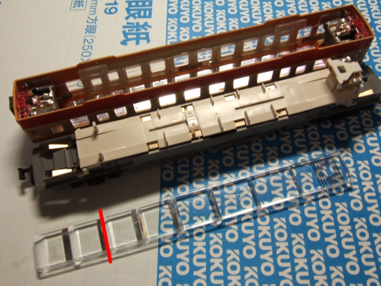

KATO 白色室内灯セットの取り付け
KATOの白色室内灯セット(11-209)を初めて購入してみました． 最近は車両ばかりに目が行ってしまい，オプションパーツの購入まで手が届かず…．
従来製品の新室内灯セット(11-204)は以前に購入したことがありますが，新室内灯セットの光源は電球でした． これに対して，白色室内灯セットは光源に白色LEDを採用しています． 蛍光灯の光を再現できるほか，低消費電力であることが特長と言えるでしょう．
今回は，KATOのキハ52 一般色(6041-1)に取り付けてみました．
パッケージ
パッケージ，説明書ともに英文が併記されています．
{kind=link}
セット内容
照明板(透明プラスチック)，アルミ箔，基板，カラーフィルター(橙色プラスチック)，基板ホルダーが各1個ずつ，集電シュー(銅板)が2個入っています． カラーフィルターは，白色LEDの光を通して白熱灯の色を再現するための部品です． 今回は使用しませんでした．
{kind=link}
取り付け方法
参考程度に，各自の責任のうえでご覧ください．
1. 車両を分解します
分解と言っても，床下(動力)部とボディに分解するだけです． 床下とボディは，ツメで固定されています．ツメの位置は台車付近(ドア付近)です．
{kind=link}
{kind=link}
2. 基板の裏面にカットしたアルミ箔を貼り付けます(約6mm)
両サイドにある切欠き部分は，アルミ箔に切り込みを入れ，折り返しておきました．

3. 基板ホルダーを取り付けます
基板から伸びている2本のピンが，基板ホルダーの溝にはまるように注意します．

4. アルミ箔を屋根裏に貼り付けます
予め貼り付け位置を確認し，アルミ箔を適当な長さにカットしておきます(今回は105mmとしました．) 皺にならないように載せた後，中心から外側に向けて貼り付けると上手くいきました．
{kind=link}
5. 照明板をカットします
キハ52は両側に運転台があり，ヘッドライト・テールライトのユニットが干渉するため，照明板はそのまま取り付けられません． 写真の赤線部分でカットします．溝がありますので簡単に折れますが，慎重な方はアクリルカッタなどを使うと良いでしょう． 切断面はやすり掛けしておいた方が無難です．
{kind=link}
6. 照明板を取り付けます
窓ガラスのプラスチックパーツに，照明板を固定するための押さえがあります． 写真では少々わかりづらいですが，実物をよく見て探してください．４ヵ所あると思います． 照明板を正しく取り付けると，ボディを揺すっても，照明板はグラつきません．
{kind=link}
7. 集電シューを取り付けます
今回のように動力車に取り付ける場合は，集電シューを折り曲げる必要があります． 写真上が折り曲げ前，写真下が折り曲げ後です．
{kind=link}
側面から見た写真です．集電シューを床下(動力)部に穴に差し込むだけです．
{kind=link}
8. 3. で組み立てた室内灯ユニットを取り付けます
側面から見た写真です．差し込むだけです．これで取り付け完了です．
{kind=link}
9. 点灯試験を行います
床下(動力)部とボディを合わせる前に，点灯試験を行います． 点灯しない場合は，説明書をよく読み，問題点を洗い出しましょう．
{kind=link}
こんな時は…
・低速で走らせると，列車の動きと同期してチラつく
車輪や動力ユニットのメンテナンスは行っていますか？ 車輪が黒ずんでいる場合は，集電不良が発生している可能性が大きいです．
・走行するが，点灯しない
集電シューと室内灯ユニットのピンは接触していますか？ アルミ箔とピンが接触していませんか？
10. 床下(動力)部とボディを合わせる
分解とは逆の要領で行います． これで全工程が終了しました．お疲れ様でした．

他社に比べ低価格ですが，取り付けの容易さはTOMIX製の方が断然良いでしょう． KATOの室内灯は，光源が片側に偏っているため，その性質上，光量も光源側に偏りがちです． しかし，工夫次第で改善できる場合もありますから，試行錯誤してみると良いと思います．